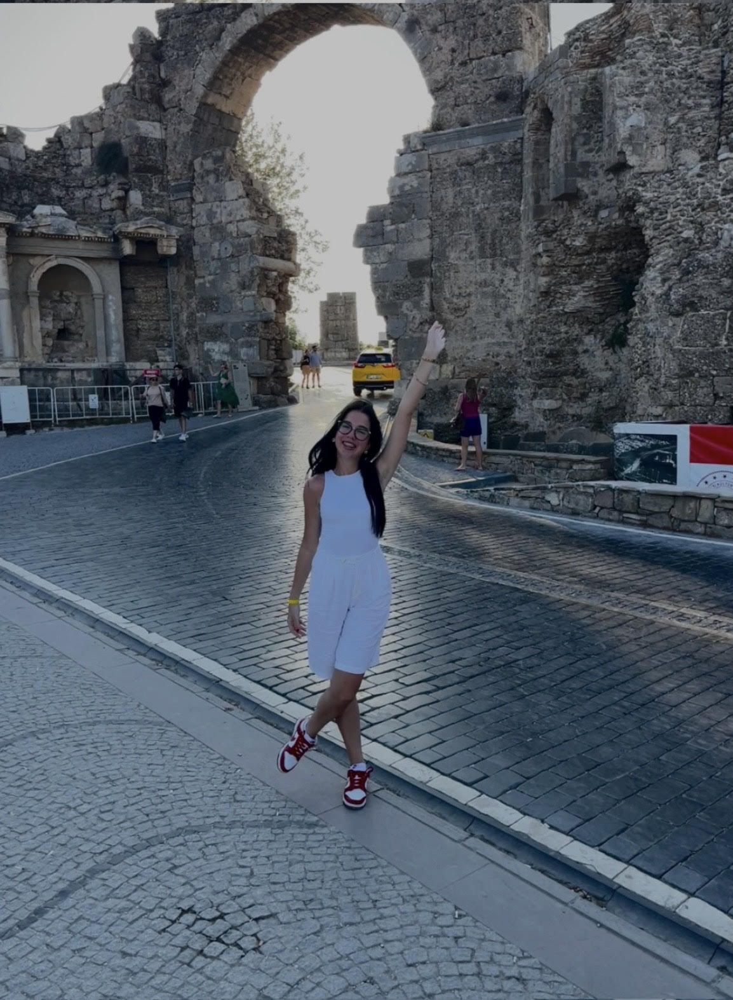

Jelisaveta Kojić
Age: 19
City/Country: Kragujevac, Serbia

Motivation: "Being active in my community and contributing to meaningful projects gives me a sense of purpose and fulfillment."
Projects: Jelisaveta has participated in several cross-border initiatives focusing on cultural exchange and peacebuilding.
Values: Creativity and empathy define her approach to tackling challenges and building connections with others.
Goals: Her dream is to bridge cultural gaps and help create stronger connections between neighboring countries.
Advice: "Step out of your comfort zone. The best opportunities are waiting for you just beyond it."
Interests: Jelisaveta loves participating in art projects, learning new languages, and promoting regional cooperation.
Contact:
- Instagram: jeekaaa_